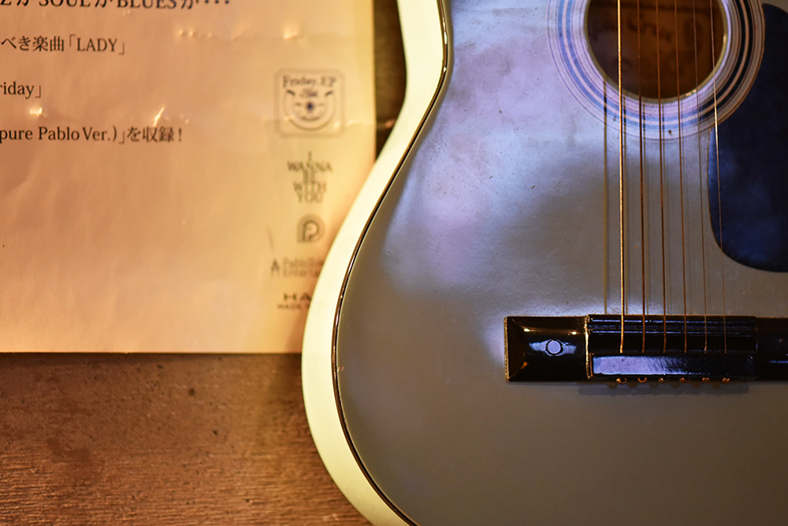

Fuzzの謎
謎
その1
謎
その2
謎
その1
なぜ音楽があるのか？

当店には、ギターやベース、カホンにタンバリン、至る所に楽器が置いてあります。
実は、隣の楽器屋さんが当店のオーナーなのです。
また、マスターが元ギタリストなので、音へのこだわりが感じられる内装になっています。
自然とアーティストや音楽好きが集まり、お客さんと一緒に即興の演奏が始まることも。
美味しいお酒やご飯と一緒に、聴くも良し、演奏するも良しです。
音楽を通じてお酒を交わせば、話も弾みいつのまにか皆仲良くなれてしまいます。
賑やかで楽しい夜を一緒に過ごしませんか？


謎
その2
なぜご飯がうまいのか？
実は、元板前です。
そのため、料理は基本的に和食がベースになっています。
メニューのリクエストも受け付けてます。
そのため、料理は基本的に和食がベースになっています。
メニューのリクエストも受け付けてます。